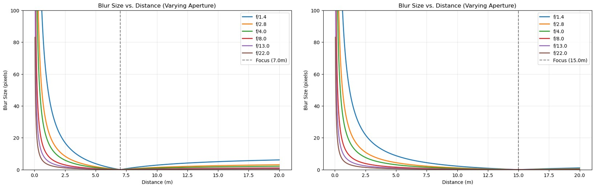
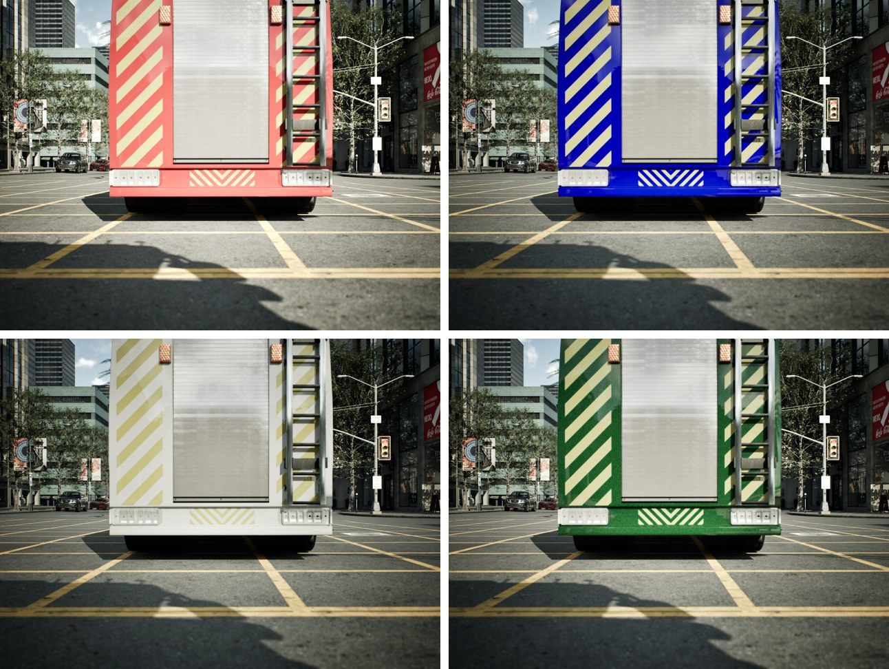
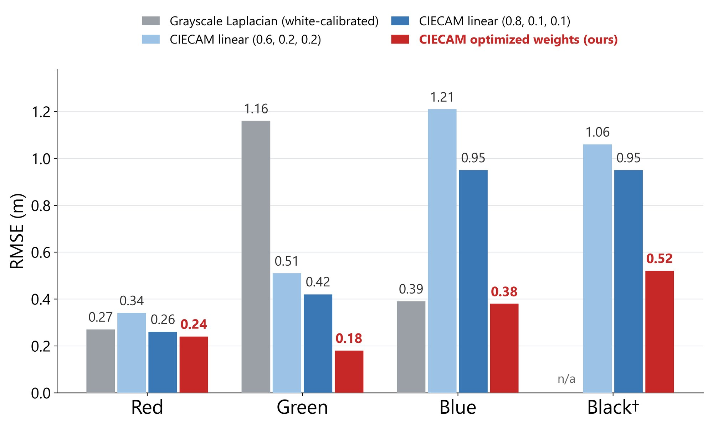

dual-aperture DFD ≥ 4.92 m
colors never used in calibration
vertical image flip
(prior DFDS benchmark)
CARLA simulation, test distances 1.2–6.7 m; real-capture result from the prior DFDS study (Chang et al., 2026).
01Video
02Abstract
Monocular depth from defocus (DFD) estimates distance from blur with a single camera, which is low-cost and physically interpretable. In practice it suffers from background mixing, the near/far ambiguity on both sides of the focal plane, and grayscale sharpness that depends on object color. CA-DFDS addresses these with three steps: a segmentation mask restricts the blur measurement to the vehicle; the focal plane is placed behind the measuring range so a single image is unambiguous; and sharpness is computed from the CIECAM02 lightness and chroma channels, whose weights are optimized jointly with the calibration curve.
On the 20–110 cm real-capture benchmark inherited from DFDS, the mean RMSE is 10.30 cm, lower than STMAP, Depth Pro and UniDepthV2. In a 1–7 m CARLA vehicle scenario, vehicles in red, green and blue — colors never used for calibration — reach 0.18–0.38 m RMSE, and the result changes by less than 0.001 m when the image is flipped.
03Method

Core idea ① — focus behind the range
If the focal plane sits inside the range (left, focus 7 m), objects in front of and behind it can show the same blur. Moving focus to 15 m (right) makes blur change in one direction across 1–7 m, so one image is enough. Earlier dual-aperture DFD on the same scene had errors above 4.9 m; the back-focused single-shot design brings the white vehicle to 0.16 m.

Core idea ② — CIECAM02 perceptual sharpness
The masked image is converted to CIECAM02 lightness J and chroma components ac, bc. Their Laplacian responses are weighted and the standard deviation inside the mask is the sharpness σ.
optimized (wJ, wa, wb) = (0.8136, 0.1782, 0.0081), calibrated on white, gray and black vehicles


04Results
CARLA scenario, test distances 1.2–6.7 m. Calibration uses only white, gray and black vehicles; red, green and blue are unseen colors.

| Sharpness measure | Red | Green | Blue | Black† |
|---|---|---|---|---|
| Grayscale Laplacian (white-calibrated) | 0.27 | 1.16 | 0.39 | — |
| CIECAM linear (0.6, 0.2, 0.2) | 0.34 | 0.51 | 1.21 | 1.06 |
| CIECAM optimized weights (ours) | 0.24 | 0.18 | 0.38 | 0.52 |
RMSE in metres. † calibration color.
Near range, real captures (20–110 cm)
| RMSE (cm) | STMAP | Depth Pro | UniDepthV2 | CA-DFDS (ours) |
|---|---|---|---|---|
| Original | 39.47 | 184.36 | 324.15 | 10.30 |
| Rotated | 66.36 | 262.42 | 375.39 | 10.96 |
Benchmark and baselines from the prior DFDS study (Chang et al., 2026).
05Demo: a vehicle approaching from 6.7 m to 1.2 m
06Where it helps
One ordinary camera, no LiDAR or stereo rig — distance you can explain step by step.
Parking assist
A rear camera estimates the 1–7 m gap and warns the driver when it gets too close.
Warehouse AGV / forklift safety
A front camera estimates distance to vehicles and obstacles so the machine slows and stops early.
Low-speed campus shuttles
A single camera keeps the following gap, reducing reliance on LiDAR.
Parking lot & yard monitoring
Existing CCTV can estimate vehicle positions and gaps and feed a digital twin.
Deployment: one camera plus 13 known-distance images for calibration. Processing time 74.41 ms per image on an RTX 5080 host (grayscale-sharpness version, mask acquisition excluded).